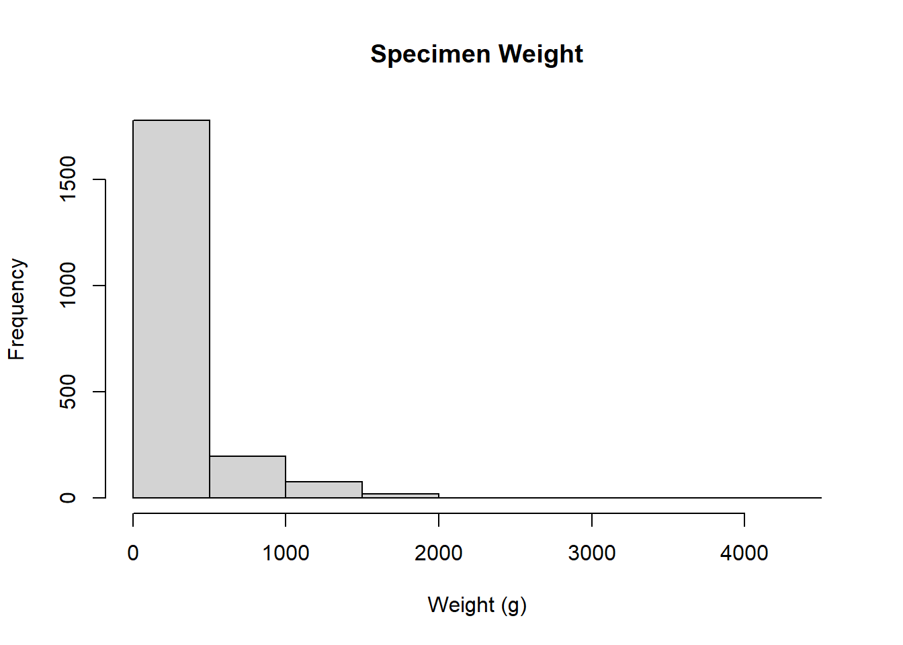
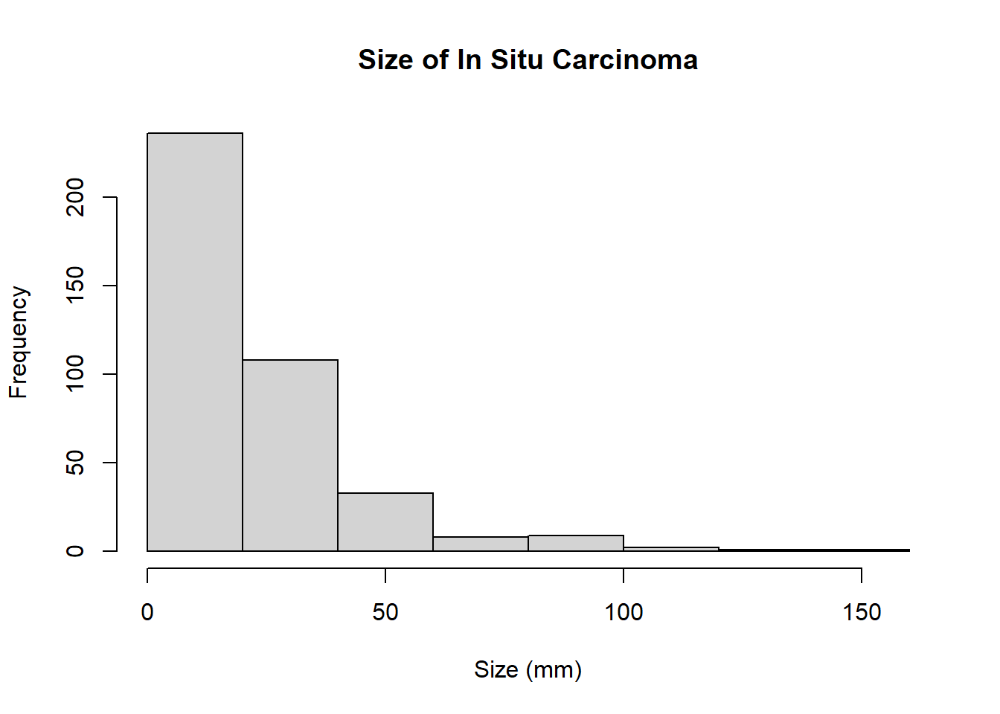
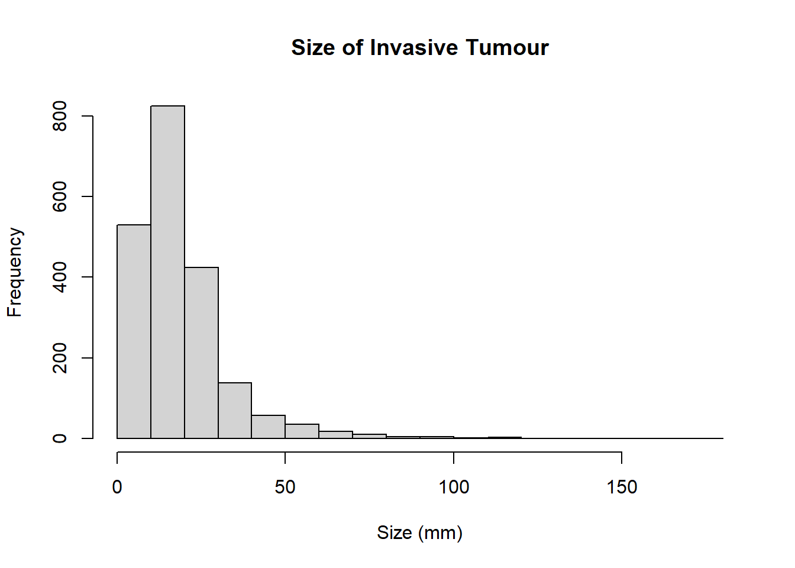

library(tidyverse)
library(summarytools)
library(readxl)
library(dplyr)
library(gt)
library(tidyr)Histopathology QC
This code is to assess the quality of the histopathology data and to indicate changes where needed.
Packages
Functions
get_missing_factors <- function(varname, df = hpdata, dict=datadict){
first_row <- which(dict$FieldName==varname)
dict2 <- dict[first_row:nrow(dict),]
last_row <- min(which(!is.na(dict2$FieldName))[-1])-1
dict_var <- dict2[1:last_row,]
dict_codes <- dict_var$Code
df_codes <- unique(df[,colnames(df)==varname])
df_codes <- df_codes[!is.na(df_codes)]
missing_codes <- setdiff(df_codes, dict_codes)
if(length(missing_codes)>0){
cat(paste(length(missing_codes), "Missing Codes"), paste("Missing Codes:", paste(missing_codes, collapse = ", ")), sep = "\n")
} else {
cat("No Missing Codes")
}
}
get_missing_factors_raw <- function(varname, df = hpdata, dict=datadict){
first_row <- which(dict$FieldName==varname)
dict2 <- dict[first_row:nrow(dict),]
last_row <- min(which(!is.na(dict2$FieldName))[-1])-1
dict_var <- dict2[1:last_row,]
dict_codes <- dict_var$Code
df_codes <- unique(df[,colnames(df)==varname])
df_codes <- df_codes[!is.na(df_codes)]
missing_codes <- setdiff(df_codes, dict_codes)
return(missing_codes)
}Read in Data
hpdata <- read.csv("R:/CoreData/v20230927/RDSHistopath_BrCa_GS_QC.csv", na.strings = "NULL")
datadict <- read_excel("C:/Users/rfrost/Documents/Misc/Histopathology QC/Histopath DD - LLM.xlsx")QC
General Analysis
This is quick generated list of missing codes in the Data Dictionary. This excludes TNM coding which is analysed separately. If reading for the purpose of recoding, check this table out, then go to the TNM section and all bases should be covered.
factor_vars <- datadict$FieldName[datadict$Datatype%in%c("varchar", "char") & datadict$`Used by LLM?`=="yes" & datadict$DataLength<6]
general_factor_analysis <- data.frame(variable_name = factor_vars, missing_factors = NA)
general_factor_analysis$missing_factors <- lapply(general_factor_analysis$variable_name, get_missing_factors_raw)
general_factor_analysis <- general_factor_analysis |>
rowwise() |>
filter(length(missing_factors)>0)
gt(general_factor_analysis)| variable_name | missing_factors |
|---|---|
| Side | l |
| Solid_DCISGP | Y |
| Cribiform_DCISGP | Y |
| Micropapillary_DCISGP | Y |
| Papillary_DCISGP | Y |
| Apocrine_DCISGP | Y |
| Flat_DCISGP | Y |
| Comedo_DCISGP | Y |
| InvasiveGrade | 1 |
| AxillaryNodesPresent | y |
| PR_Status | p |
Just a few issues here coming from TRUE/FALSE coding in the data dictionary to Y/N coding in the data. Also a few upper/lower case issues which should be easily solved.
Variable Check
dict_variables <- datadict$FieldName
dict_variables <- dict_variables[!is.na(dict_variables)]
data_variables <- colnames(hpdata)
missing_variables <- setdiff(data_variables, dict_variables)
cat("Missing Variables in Data Dictionary:", paste(missing_variables, collapse = ", "))Missing Variables in Data Dictionary: TCode, DuctalCarcinomaInsitu, Clinging_DCISGP, NStage, MStage, RStage, Pr_TypeJust some misspellings of the variables in the dictionary vs the data. Again just upper/lower case issues.
Specimen
Side
freq(hpdata$Side, cumul = F)Frequencies
hpdata$Side
Type: Character
Freq % Valid % Total
----------- ------ --------- ---------
l 1 0.035 0.035
L 1446 50.630 50.630
R 1408 49.300 49.300
U 1 0.035 0.035
<NA> 0 0.000
Total 2856 100.000 100.000get_missing_factors("Side")1 Missing Codes
Missing Codes: lNeed to recode lower-cases maybe? l to L, r to R etc.
TumourCount
freq(hpdata$TumourCount, cumul =F)Frequencies
hpdata$TumourCount
Type: Integer
Freq % Valid % Total
----------- ------ --------- ---------
1 2839 99.40 99.40
2 17 0.60 0.60
<NA> 0 0.00
Total 2856 100.00 100.00ScreenDetected
freq(hpdata$ScreenDetected, cumul =F)Frequencies
hpdata$ScreenDetected
Type: Character
Freq % Valid % Total
----------- ------ --------- ---------
N 32 7.46 1.12
NK 17 3.96 0.60
Y 380 88.58 13.31
<NA> 2427 84.98
Total 2856 100.00 100.00get_missing_factors("ScreenDetected")No Missing CodesSpecimenType
freq(hpdata$SpecimenType, cumul =F)Frequencies
hpdata$SpecimenType
Type: Character
Freq % Valid % Total
----------- ------ --------- ---------
FNA 2 0.070 0.070
LB 72 2.521 2.521
M 739 25.875 25.875
NBO 10 0.350 0.350
OB 23 0.805 0.805
Re-ex 1 0.035 0.035
SE 31 1.085 1.085
TMP 6 0.210 0.210
WBB 347 12.150 12.150
WLE 1625 56.898 56.898
<NA> 0 0.000
Total 2856 100.000 100.000get_missing_factors("SpecimenType")No Missing CodesSpecimen Weight
summary(hpdata$SpecimenWeight) Min. 1st Qu. Median Mean 3rd Qu. Max. NA's
1.31 26.00 51.00 208.80 207.00 4218.00 783 hist(hpdata$SpecimenWeight, main = "Specimen Weight", xlab = "Weight (g)")
Axillary Procedure
freq(hpdata$AxillaryProcedure, cumul = F)Frequencies
hpdata$AxillaryProcedure
Type: Character
Freq % Valid % Total
----------- ------ --------- ---------
ANC 323 14.72 11.31
ANS 623 28.38 21.81
NLN 184 8.38 6.44
OSNA 30 1.37 1.05
SNB 1035 47.15 36.24
<NA> 661 23.14
Total 2856 100.00 100.00get_missing_factors("AxillaryProcedure")No Missing CodesPostNeoadjuvantChemo
freq(hpdata$PostNeoadjuvantChemo, cumul = F)Frequencies
hpdata$PostNeoadjuvantChemo
Type: Character
Freq % Valid % Total
----------- ------ --------- ---------
C 140 96.55 4.90
E 3 2.07 0.11
PC 2 1.38 0.07
<NA> 2711 94.92
Total 2856 100.00 100.00get_missing_factors("PostNeoadjuvantChemo")No Missing CodesIn Situ Legion
InsituCarcinoma
freq(hpdata$InsituCarcinoma, cumul = F)Frequencies
hpdata$InsituCarcinoma
Type: Character
Freq % Valid % Total
----------- ------ --------- ---------
N 497 18.98 17.40
P 2121 81.02 74.26
<NA> 238 8.33
Total 2856 100.00 100.00get_missing_factors("InsituCarcinoma")No Missing CodesDuctalCarcinomaInSitu
freq(hpdata$DuctalCarcinomaInsitu, cumul = F)Frequencies
hpdata$DuctalCarcinomaInsitu
Type: Character
Freq % Valid % Total
----------- ------ --------- ---------
N 576 23.12 20.17
P 1915 76.88 67.05
<NA> 365 12.78
Total 2856 100.00 100.00get_missing_factors("DuctalCarcinomaInSitu")No Missing CodesDCISGrade
freq(hpdata$DCISGrade, cumul = F)Frequencies
hpdata$DCISGrade
Type: Character
Freq % Valid % Total
----------- ------ --------- ---------
H 962 51.28 33.68
HI 120 6.40 4.20
I 537 28.62 18.80
IL 71 3.78 2.49
L 184 9.81 6.44
N 2 0.11 0.07
<NA> 980 34.31
Total 2856 100.00 100.00get_missing_factors("DCISGrade")No Missing CodesSolid_DCISGP
freq(hpdata$Solid_DCISGP, cumul = F)Frequencies
hpdata$Solid_DCISGP
Type: Character
Freq % Valid % Total
----------- ------ --------- ---------
Y 917 100.00 32.11
<NA> 1939 67.89
Total 2856 100.00 100.00get_missing_factors("Solid_DCISGP")1 Missing Codes
Missing Codes: YSeems like Data Dict needs updating coding system.
Cribiform_DCISGP
freq(hpdata$Cribiform_DCISGP, cumul = F)Frequencies
hpdata$Cribiform_DCISGP
Type: Character
Freq % Valid % Total
----------- ------ --------- ---------
Y 847 100.00 29.66
<NA> 2009 70.34
Total 2856 100.00 100.00get_missing_factors("Cribiform_DCISGP")1 Missing Codes
Missing Codes: YSee above.
Micropapillary_DCISGP
freq(hpdata$Micropapillary_DCISGP, cumul = F)Frequencies
hpdata$Micropapillary_DCISGP
Type: Character
Freq % Valid % Total
----------- ------ --------- ---------
Y 176 100.00 6.16
<NA> 2680 93.84
Total 2856 100.00 100.00get_missing_factors("Micropapillary_DCISGP")1 Missing Codes
Missing Codes: YPapillary_DCISGP
freq(hpdata$Papillary_DCISGP, cumul = F)Frequencies
hpdata$Papillary_DCISGP
Type: Character
Freq % Valid % Total
----------- ------ --------- ---------
Y 65 100.00 2.28
<NA> 2791 97.72
Total 2856 100.00 100.00get_missing_factors("Papillary_DCISGP")1 Missing Codes
Missing Codes: YApocrine_DCISGP
freq(hpdata$Apocrine_DCISGP, cumul = F)Frequencies
hpdata$Apocrine_DCISGP
Type: Character
Freq % Valid % Total
----------- ------ --------- ---------
Y 32 100.00 1.12
<NA> 2824 98.88
Total 2856 100.00 100.00get_missing_factors("Apocrine_DCISGP")1 Missing Codes
Missing Codes: YFlat_DCISGP
freq(hpdata$Flat_DCISGP, cumul = F)Frequencies
hpdata$Flat_DCISGP
Type: Character
Freq % Valid % Total
----------- ------ --------- ---------
Y 34 100.00 1.19
<NA> 2822 98.81
Total 2856 100.00 100.00get_missing_factors("Flat_DCISGP")1 Missing Codes
Missing Codes: YComedo_DCISGP
freq(hpdata$Comedo_DCISGP, cumul = F)Frequencies
hpdata$Comedo_DCISGP
Type: Character
Freq % Valid % Total
----------- ------ --------- ---------
Y 332 100.00 11.62
<NA> 2524 88.38
Total 2856 100.00 100.00get_missing_factors("Comedo_DCISGP")1 Missing Codes
Missing Codes: YClinging
freq(hpdata$Clinging, cumul = F)Frequencies
Freq % Valid % Total
----------- ------ --------- ---------
Y 33 100.00 1.16
<NA> 2823 98.84
Total 2856 100.00 100.00get_missing_factors("Clinging")No Missing CodesComedoNecrosis
freq(hpdata$ComedoNecrosis, cumul = F)Frequencies
hpdata$ComedoNecrosis
Type: Character
Freq % Valid % Total
----------- ------ --------- ---------
Mar 5 0.71 0.18
Mil 18 2.57 0.63
Mod 23 3.28 0.81
N 202 28.82 7.07
Y 453 64.62 15.86
<NA> 2155 75.46
Total 2856 100.00 100.00get_missing_factors("ComedoNecrosis")No Missing CodesSizeDCISOnly
summary(hpdata$SizeDCISOnly) Min. 1st Qu. Median Mean 3rd Qu. Max. NA's
1.00 9.00 17.00 23.45 30.00 153.00 2458 hist(hpdata$SizeDCISOnly, main = "Size of In Situ Carcinoma", xlab = "Size (mm)")
LobularCarcinomaInsitu
freq(hpdata$LobularCarcinomaInsitu, cumul = F)Frequencies
hpdata$LobularCarcinomaInsitu
Type: Character
Freq % Valid % Total
----------- ------ --------- ---------
N 336 47.86 11.76
Y 366 52.14 12.82
<NA> 2154 75.42
Total 2856 100.00 100.00get_missing_factors("LobularCarcinomaInsitu")No Missing CodesPleomorphicLCIS
freq(hpdata$PleomorphicLCIS, cumul = F)Frequencies
hpdata$PleomorphicLCIS
Type: Character
Freq % Valid % Total
----------- ------ --------- ---------
Y 29 100.00 1.02
<NA> 2827 98.98
Total 2856 100.00 100.00get_missing_factors("PleomorphicLCIS")No Missing CodesPagetsDisease
freq(hpdata$PagetsDisease, cumul = F)Frequencies
hpdata$PagetsDisease
Type: Character
Freq % Valid % Total
----------- ------ --------- ---------
N 556 96.19 19.47
Y 22 3.81 0.77
<NA> 2278 79.76
Total 2856 100.00 100.00get_missing_factors("PagetsDisease")No Missing CodesMicroinvasion
freq(hpdata$Microinvasion, cumul = F)Frequencies
hpdata$Microinvasion
Type: Character
Freq % Valid % Total
----------- ------ --------- ---------
N 377 83.59 13.20
P 74 16.41 2.59
<NA> 2405 84.21
Total 2856 100.00 100.00get_missing_factors("Microinvasion")No Missing CodesInvasive Carcinoma
InvasiveCarcinoma
freq(hpdata$InvasiveCarcinoma, cumul = F)Frequencies
hpdata$InvasiveCarcinoma
Type: Character
Freq % Valid % Total
----------- ------ --------- ---------
N 459 16.20 16.07
P 2375 83.80 83.16
<NA> 22 0.77
Total 2856 100.00 100.00get_missing_factors("InvasiveCarcinoma")No Missing CodesSizeInvasiveTumour
summary(hpdata$SizeInvasiveTumour) Min. 1st Qu. Median Mean 3rd Qu. Max. NA's
0.70 10.00 16.00 19.66 24.00 174.00 801 hist(hpdata$SizeInvasiveTumour, main = "Size of Invasive Tumour", xlab = "Size (mm)")
SizeWholeTumour
summary(hpdata$SizeWholeTumour) Min. 1st Qu. Median Mean 3rd Qu. Max. NA's
1.00 13.00 20.00 24.81 30.00 174.00 860 hist(hpdata$SizeWholeTumour, main = "Size of Whole Tumour", xlab = "Size (mm)")
Type
freq(hpdata$Type, cumul = F)Frequencies
hpdata$Type
Type: Character
Freq % Valid % Total
----------- ------ --------- ---------
MIX 35 1.48 1.23
MTT 63 2.67 2.21
NST 1859 78.87 65.09
OTH 20 0.85 0.70
PST 380 16.12 13.31
<NA> 499 17.47
Total 2856 100.00 100.00get_missing_factors("Type")No Missing CodesTypeComponent
freq(hpdata$TypeComponent, cumul = F)Frequencies
hpdata$TypeComponent
Type: Character
Freq % Valid % Total
----------- ------ --------- ---------
Crb 7 1.13 0.25
D/L 52 8.43 1.82
Lob 316 51.22 11.06
Med 20 3.24 0.70
Muc 48 7.78 1.68
Oth 90 14.59 3.15
Pap 6 0.97 0.21
T/C 10 1.62 0.35
Tub 57 9.24 2.00
Tul 11 1.78 0.39
<NA> 2239 78.40
Total 2856 100.00 100.00get_missing_factors("TypeComponent")No Missing CodesInvasiveGrade
freq(hpdata$InvasiveGrade, cumul = F)Frequencies
hpdata$InvasiveGrade
Type: Character
Freq % Valid % Total
----------- ------ --------- ---------
1 417 18.01 14.60
1· 3 0.13 0.11
2 1156 49.94 40.48
3 727 31.40 25.46
NA 12 0.52 0.42
<NA> 541 18.94
Total 2856 100.00 100.00get_missing_factors("InvasiveGrade")1 Missing Codes
Missing Codes: 1 Seems to be a 1. in the dataset that just needs changing.
Tubules
freq(hpdata$Tubules, cumul = F)Frequencies
hpdata$Tubules
Type: Integer
Freq % Valid % Total
----------- ------ --------- ---------
1 163 9.76 5.71
2 394 23.59 13.80
3 1113 66.65 38.97
<NA> 1186 41.53
Total 2856 100.00 100.00get_missing_factors("Tubules")No Missing CodesPleomorphism
freq(hpdata$Pleomorphism, cumul = F)Frequencies
hpdata$Pleomorphism
Type: Integer
Freq % Valid % Total
----------- ------ --------- ---------
1 54 3.23 1.89
2 726 43.42 25.42
3 892 53.35 31.23
<NA> 1184 41.46
Total 2856 100.00 100.00get_missing_factors("Pleomorphism")No Missing CodesMitoticActivity
freq(hpdata$MitoticActivity, cumul = F)Frequencies
hpdata$MitoticActivity
Type: Integer
Freq % Valid % Total
----------- ------ --------- ---------
1 1030 61.64 36.06
2 356 21.30 12.46
3 285 17.06 9.98
<NA> 1185 41.49
Total 2856 100.00 100.00get_missing_factors("MitoticActivity")No Missing CodesTumourExtent
freq(hpdata$TumourExtent, cumul = F)Frequencies
hpdata$TumourExtent
Type: Character
Freq % Valid % Total
----------- ------ --------- ---------
LOC 678 70.62 23.74
MIF 265 27.60 9.28
UNI 17 1.77 0.60
<NA> 1896 66.39
Total 2856 100.00 100.00get_missing_factors("TumourExtent")No Missing CodesLymph Nodes
VascularInvasion
freq(hpdata$VascularInvasion, cumul = F)Frequencies
hpdata$VascularInvasion
Type: Character
Freq % Valid % Total
----------- ------ --------- ---------
NS 1556 73.50 54.48
Poss 91 4.30 3.19
Pres 470 22.20 16.46
<NA> 739 25.88
Total 2856 100.00 100.00get_missing_factors("VascularInvasion")No Missing CodesAxillaryNodesPresent
freq(hpdata$AxillaryNodesPresent, cumul = F)Frequencies
hpdata$AxillaryNodesPresent
Type: Character
Freq % Valid % Total
----------- ------ --------- ---------
N 148 6.733 5.182
y 1 0.045 0.035
Y 2049 93.221 71.744
<NA> 658 23.039
Total 2856 100.000 100.000get_missing_factors("AxillaryNodesPresent")1 Missing Codes
Missing Codes: yCase issue here.
AxillaryNodesTotal
summary(hpdata$AxillaryNodesTotal) Min. 1st Qu. Median Mean 3rd Qu. Max. NA's
1.000 2.000 3.000 5.887 7.000 37.000 809 invalid_values <- which(!is.na(hpdata$AxillaryNodesTotal[hpdata$AxillaryNodesPresent=="N" | is.na(hpdata$AxillaryNodesPresent)]))
invalid_TCodes <- hpdata$TCode[invalid_values]
cat(paste(length(invalid_values), "Invalid Values where None/NA Nodes Present but Total Nodes not NA"),
paste("Invalid TCodes:", paste(invalid_TCodes, collapse = ", ")), sep = "\n")1 Invalid Values where None/NA Nodes Present but Total Nodes not NA
Invalid TCodes: T295H261AxillaryNodesPositive
summary(hpdata$AxillaryNodesPositive) Min. 1st Qu. Median Mean 3rd Qu. Max. NA's
0.0000 0.0000 0.0000 0.9346 1.0000 26.0000 807 invalid_values <- which(!is.na(hpdata$AxillaryNodesPositive[hpdata$AxillaryNodesPresent=="N" | is.na(hpdata$AxillaryNodesPresent)]))
invalid_TCodes <- hpdata$TCode[invalid_values]
cat(paste(length(invalid_values), "Invalid Values where None/NA Nodes Present but Positive Nodes not NA"),
paste("Invalid TCodes:", paste(invalid_TCodes, collapse = ", ")), sep = "\n")1 Invalid Values where None/NA Nodes Present but Positive Nodes not NA
Invalid TCodes: T295H261SingleNodePositivity
freq(hpdata$SingleNodePositivity, cumul = F)Frequencies
hpdata$SingleNodePositivity
Type: Character
Freq % Valid % Total
----------- ------ --------- ---------
Iso 11 3.35 0.39
Met 229 69.82 8.02
Mic 88 26.83 3.08
<NA> 2528 88.52
Total 2856 100.00 100.00get_missing_factors("SingleNodePositivity")No Missing CodesOtherNodesPresent
freq(hpdata$OtherNodesPresent, cumul = F)Frequencies
hpdata$OtherNodesPresent
Type: Character
Freq % Valid % Total
----------- ------ --------- ---------
N 296 73.27 10.36
Y 108 26.73 3.78
<NA> 2452 85.85
Total 2856 100.00 100.00get_missing_factors("OtherNodesPresent")No Missing CodesOtherNodesTotal
summary(hpdata$OtherNodesTotal) Min. 1st Qu. Median Mean 3rd Qu. Max. NA's
0.000 1.000 2.000 1.982 2.000 12.000 2747 invalid_values <- which(!is.na(hpdata$OtherNodesTotal[hpdata$OtherNodesPresent=="N" | is.na(hpdata$OtherNodesPresent)]))
invalid_TCodes <- hpdata$TCode[invalid_values]
cat(paste(length(invalid_values), "Invalid Values where None/NA Nodes Present but Total Nodes not NA"),
paste("Invalid TCodes:", paste(invalid_TCodes, collapse = ", ")), sep = "\n")1 Invalid Values where None/NA Nodes Present but Total Nodes not NA
Invalid TCodes: T379I238OtherNodesPositive
summary(hpdata$OtherNodesPositive) Min. 1st Qu. Median Mean 3rd Qu. Max. NA's
0.0000 0.0000 0.0000 0.2936 0.0000 3.0000 2747 invalid_values <- which(!is.na(hpdata$OtherNodesPositive[hpdata$OtherNodesPresent=="N" | is.na(hpdata$OtherNodesPresent)]))
invalid_TCodes <- hpdata$TCode[invalid_values]
cat(paste(length(invalid_values), "Invalid Values where None/NA Nodes Present but Positive Nodes not NA"),
paste("Invalid TCodes:", paste(invalid_TCodes, collapse = ", ")), sep = "\n")1 Invalid Values where None/NA Nodes Present but Positive Nodes not NA
Invalid TCodes: T379I238TNM Stage
Lots of ‘Missing Codes’ in the dictionary. I have split coding in pre, main, and post and gone by the specifications in the data dictionary. This causes lots of missing codes as inputs can vary greatly for these variables based on the person writing the pathology report.
Tstage
preTstage <- c("c", "p", "yp", "yc", "")
mainTstage <- c("TX", "T0", "Tis", "T1", "T1mic", "T1mi", "T1a", "T1b", "T1c", "T2", "T3", "T4", "T4a", "T4b", "T4c", "T4d")
postTstage <- c("m", "")
Tstagecodes <- character(0)
for(pre in preTstage){
for(main in mainTstage){
for(post in postTstage){
Tstagecodes <- append(Tstagecodes, paste0(pre, main, post))
}
}
}
#freq(hpdata$Tstage) #Maybe don't include this.
missing_codes <- setdiff(unique(hpdata$Tstage)[!is.na(unique(hpdata$Tstage))], Tstagecodes)
if(length(missing_codes)>0){
cat(paste(length(missing_codes), "Missing Codes"), paste("Missing Codes:", paste(missing_codes, collapse = ", ")), sep = "\n")
} else {
cat("No Missing Codes")
}41 Missing Codes
Missing Codes: pT2(m), pTis(DCIS), yPT2, yT2, pT1C, pT11, pT1C(m), pT1c(m), pT1b(m), 1b, pT1 G3, yTis, pT3(m), ypT1(multifocal, pT1 G1, pT1c/pT1c, pTis papillary, pT1c(3), pT1c(2), ypTis(DCIS), pTc, NA, pT2 G3, pTis (DCIS), pT, p, pT1(micro), pTx, pN0, pt1a, G3 T2, ypT2a, pTic, ypTx, pT1c (multi), y, pT2(2), pTis - DCIS, pT`c, pT1c(4), pT1a/pT1bNStage
preNstage <- c("c", "p", "")
mainNstage <- c("NX", "N0", "N1", "N1mi", "N1a", "N1b", "N1c", "N2", "N2a", "N2b", "N3", "N3a", "N3b", "N3c")
postNstage <- c("(sn)", "(ONSA)", "")
Nstagecodes <- character(0)
for(pre in preNstage){
for(main in mainNstage){
for(post in postNstage){
Nstagecodes <- append(Nstagecodes, paste0(pre, main, post))
}
}
}
#freq(hpdata$Nstage) #Maybe don't include this.
missing_codes <- setdiff(unique(hpdata$NStage)[!is.na(unique(hpdata$NStage))], Nstagecodes)
if(length(missing_codes)>0){
cat(paste(length(missing_codes), "Missing Codes"), paste("Missing Codes:", paste(missing_codes, collapse = ", ")), sep = "\n")
} else {
cat("No Missing Codes")
}87 Missing Codes
Missing Codes: N0(SNB), pN0sn, pNIbiv, pN1(mi), Pn1, N1 micro, pN1mic(SN), N1a(mic)(sn), ypN2a, N0sn, pN, N1(SNB OSNA), pN(ONSA)1, pNx, ypN2, ypN3a, pN(OSNA)1, pN0(mo1-)sn, pNo(sn), 0, N1mc(sn), pT0(sn), pN1mic, ypN1, Pnx, yN0, ypN0sn, ypN0(sn), Nx, pN0(0/3), pN(sn), pNO(sn), ypN0, pN1sn, Pn2(9/11), Pn0, N0 (sn), pN1(2/35), L1 N0, Pn0(SN), pN1mic(sn), pN1osna(mic), pN0(sn)(OSNA), pN(sn)0, pN2s, N0(2sn+3non-sn), NO(sn), pyN0, pN(sn)OSNA, pN0(sn)OSNA, pN1(sn)(mol+), pMx, N1(mi), N1mic, pN0(sn0, pN0(i+), ypN1mi(sn), pNoi+(sn), pN0(s), pN(sn)1, Pn0(0/9), ypN1a, pN1/3(sn), N1(1mic; 1itc), pN(sn)OSNAx, pN(OSNA)1mic, pN0(i+)(sn), pN0(sn)(mol-), N1(SNB by OSNA), ypN1(sn), pTN0(sn), pN0 (sn), pN0(sn)(ONSA), pN0 (TNM7), ypN1a(sn), N(sn)0, N(sn)1, pN0(SN), N1a(SNB), ypN0 (0/1), pN(OSNA)0, pN0(0/3)(sn), pN0(ans), N0(OSNA), N0 (OSNA), pNmi, yN1MStage
preMstage <- c("c", "p", "")
mainMstage <- c("M0", "M0(i+)", "M1")
Mstagecodes <- character(0)
for(pre in preMstage){
for(main in mainMstage){
Mstagecodes <- append(Mstagecodes, paste0(pre, main))
}
}
missing_codes <- setdiff(unique(hpdata$MStage)[!is.na(unique(hpdata$MStage))], Mstagecodes)
if(length(missing_codes)>0){
cat(paste(length(missing_codes), "Missing Codes"), paste("Missing Codes:", paste(missing_codes, collapse = ", ")), sep = "\n")
} else {
cat("No Missing Codes")
}17 Missing Codes
Missing Codes: pMX, Mx, MX, pMx, ptMX, ypMx, MX G3, Pmx, pMX (stage1), MxG1, NA, ypM0, pMx (Stage 1), MX L1G2, ypMX, pMx (stage1), M0 IIBExcision Status
ExcisionMargin
freq(hpdata$ExcisionMargin, cumul = F)Frequencies
hpdata$ExcisionMargin
Type: Character
Freq % Valid % Total
----------- ------ --------- ---------
NRM 1810 80.88 63.38
RRM 428 19.12 14.99
<NA> 618 21.64
Total 2856 100.00 100.00get_missing_factors("ExcisionMargin")No Missing CodesClosestRelevantMargin
summary(hpdata$ClosestRelevantMargin) Min. 1st Qu. Median Mean 3rd Qu. Max. NA's
0.020 1.000 3.000 4.686 6.000 55.000 1109 hist(hpdata$ClosestRelevantMargin, main = "Closest Relevant Margin", xlab = "Distance (mm)")
ER_Status
freq(hpdata$ER_Status, cumul = F)Frequencies
hpdata$ER_Status
Type: Character
Freq % Valid % Total
----------- ------ --------- ---------
N 367 15.64 12.85
NP 20 0.85 0.70
P 1960 83.51 68.63
<NA> 509 17.82
Total 2856 100.00 100.00get_missing_factors("ER_Status")No Missing CodesER_Type
freq(hpdata$ER_Type, cumul = F)Frequencies
hpdata$ER_Type
Type: Character
Freq % Valid % Total
----------- ------ --------- ---------
I 1 0.051 0.035
IP 119 6.081 4.167
MD 1 0.051 0.035
P 13 0.664 0.455
QS 1823 93.153 63.831
<NA> 899 31.478
Total 2856 100.000 100.000get_missing_factors("ER_Type")No Missing CodesPR_Status
freq(hpdata$PR_Status, cumul = F)Frequencies
hpdata$PR_Status
Type: Character
Freq % Valid % Total
----------- ------ --------- ---------
N 522 31.370 18.277
NP 95 5.709 3.326
p 1 0.060 0.035
P 1046 62.861 36.625
<NA> 1192 41.737
Total 2856 100.000 100.000get_missing_factors("PR_Status")1 Missing Codes
Missing Codes: pPR_Type
freq(hpdata$Pr_Type, cumul = F)Frequencies
hpdata$Pr_Type
Type: Character
Freq % Valid % Total
----------- ------ --------- ---------
I 2 0.163 0.070
IP 87 7.096 3.046
MD 1 0.082 0.035
P 12 0.979 0.420
QS 1124 91.680 39.356
<NA> 1630 57.073
Total 2856 100.000 100.000get_missing_factors("PR_Type")No Missing CodesHER2_Status
freq(hpdata$HER2_Status, cumul = F)Frequencies
hpdata$HER2_Status
Type: Character
Freq % Valid % Total
----------- ------ --------- ---------
B 15 0.72 0.53
N 1695 81.77 59.35
NP 50 2.41 1.75
P 313 15.10 10.96
<NA> 783 27.42
Total 2856 100.00 100.00get_missing_factors("HER2_Status")No Missing CodesHER2_Score
freq(hpdata$HER2_Score, cumul = F)Frequencies
hpdata$HER2_Score
Type: Character
Freq % Valid % Total
----------- ------ --------- ---------
0 361 25.603 12.640
0/1+ 4 0.284 0.140
1/2+ 2 0.142 0.070
1+ 555 39.362 19.433
1+/2+ 2 0.142 0.070
2/3+ 2 0.142 0.070
2+ 280 19.858 9.804
2+/3+ 3 0.213 0.105
3 1 0.071 0.035
3+ 200 14.184 7.003
<NA> 1446 50.630
Total 2856 100.000 100.000No current codes given for this.
HER2_FISH
freq(hpdata$HER2_FISH, cumul = F)Frequencies
hpdata$HER2_FISH
Type: Character
Freq % Valid % Total
----------- ------ --------- ---------
A 53 15.19 1.86
N 171 49.00 5.99
NEG 80 22.92 2.80
NP 27 7.74 0.95
POS 18 5.16 0.63
<NA> 2507 87.78
Total 2856 100.00 100.00get_missing_factors("HER2_FISH")No Missing CodesCK56_Status
freq(hpdata$CK56_Status, cumul = F)Frequencies
hpdata$CK56_Status
Type: Character
Freq % Valid % Total
----------- ------ --------- ---------
N 14 46.67 0.49
P 16 53.33 0.56
<NA> 2826 98.95
Total 2856 100.00 100.00get_missing_factors("CK56_Status")No Missing CodesCK56_Type
freq(hpdata$CK56_Type, cumul = F)Frequencies
hpdata$CK56_Type
Type: Character
Freq % Valid % Total
----------- ------ --------- ---------
I 2 100.00 0.07
<NA> 2854 99.93
Total 2856 100.00 100.00get_missing_factors("CK56_Type")No Missing CodesKi67
summary(hpdata$Ki67, cumul = F) Min. 1st Qu. Median Mean 3rd Qu. Max. NA's
2.00 5.00 15.00 18.51 25.00 80.00 2780 hist(hpdata$Ki67, main = "Percentage Positive Ki67 Nuclei", xlab = "Percentage (%)")
ICDMorphologyCode
freq(hpdata$ICDMorphologyCode, cumul = F)Frequencies
hpdata$ICDMorphologyCode
Type: Character
Freq % Valid % Total
------------ ------ --------- ---------
M09450 2 0.307 0.070
M09460 1 0.153 0.035
M80003 1 0.153 0.035
M80013 1 0.153 0.035
M80102 5 0.767 0.175
M80103 14 2.147 0.490
M80106 4 0.613 0.140
M80502 1 0.153 0.035
M81233 1 0.153 0.035
M81402 1 0.153 0.035
M81403 26 3.988 0.910
M81406 2 0.307 0.070
M82013 2 0.307 0.070
M82113 5 0.767 0.175
M82302 3 0.460 0.105
M84803 5 0.767 0.175
m85002 1 0.153 0.035
M85002 78 11.963 2.731
M85003 410 62.883 14.356
M85005 1 0.153 0.035
M85032 1 0.153 0.035
M85043 1 0.153 0.035
M85202 5 0.767 0.175
M85203 67 10.276 2.346
M85213 10 1.534 0.350
M85223 2 0.307 0.070
M85403 2 0.307 0.070
<NA> 2204 77.171
Total 2856 100.000 100.000firstcode <- str_sub(hpdata$ICDMorphologyCode, 1, 1)
code <- as.numeric(str_sub(hpdata$ICDMorphologyCode, 2, -1))
codemask <- (code>80000 & code <90550)
missing_MCodes <- hpdata$ICDMorphologyCode[which(!is.na(hpdata$ICDMorphologyCode) & (firstcode!="M" | codemask==0))]
cat(paste(length(missing_MCodes), "Missing Codes"), paste("Missing Codes:", paste(missing_MCodes, collapse = ", ")), sep = "\n")4 Missing Codes
Missing Codes: M09460, M09450, M09450, m85002Would like a more thorough ICDM system implemented here. Will look into it.
BrCa1
freq(hpdata$BrCa1, cumul = F)Frequencies
hpdata$BrCa1
Type: Character
Freq % Valid % Total
----------- ------ --------- ---------
Y 7 100.00 0.25
<NA> 2849 99.75
Total 2856 100.00 100.00get_missing_factors("BrCa1")No Missing CodesBrCa2
freq(hpdata$BrCa2, cumul = F)Frequencies
hpdata$BrCa2
Type: Character
Freq % Valid % Total
----------- ------ --------- ---------
Y 8 100.00 0.28
<NA> 2848 99.72
Total 2856 100.00 100.00get_missing_factors("BrCa2")No Missing Codes